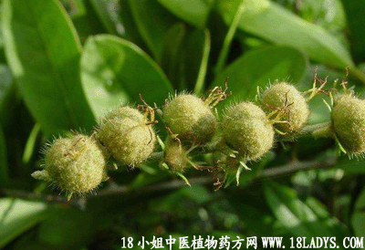

(本文解释权归中药材天地网兄弟站-18小姐中医植物药方网所有,如需转载请注明出处)

别名：山辣蓼。
植物名：毛果巴豆。
生长环境：本品为灌木。生于山地或郊野路旁。
分布：我国南部常见，广州市郊普遍生长。
入药部分：根。
采集期：全年采根。
自采地点：大山。
性味：性温、味辛。
功能：祛风去毒。
主治、用量和用法：1、皮肤生蛇痕痒：干根5钱至1两，清水煎服，或加瘦肉同煎；2、蛇头缠指：将干根磨酒、搽患处；3、蛇伤，配伍用。或将干根磨酒服。
验方：（治蛇伤方）细叶双眼龙1两、半边莲5钱、七星剑5钱、蛇总管5钱，清水三碗，煎成一碗，冲酒服。
（方解）全方四药，均为民间常用鲜蛇伤毒之品，而细叶双眼龙，七星剑兼能祛风；蛇总管、半边莲兼能清热。合为祛风、清热、解蛇咬中毒之剂。用酒冲服则行气走表，领药力速达病所。
（方歌）细叶双龙专解毒，毒蛇咬伤能制伏，总管七星半边莲，煎成酒冲宜即服。
参考资料：《广东省中医验方交流总编》新滘区公开治毒蛇咬伤方：细叶双眼龙3两、老虎脷1两、黑面神1两、小兰青1两、六耳苓1两、独脚鸟栖头1两、大兰青1两、节节花1两、鬼羽箭1两、鲫鱼草1两、寮刁竹1两、金锁匙1两、铁色金1两、毛麝香1两、一枝香（又名七叶一枝花）1两、威灵仙1两、田基黄1两、入地金牛1两，以上各药，先晒干，然后用三蒸酒三斤浸至1个月出味应用。其用法：如被毒蛇咬伤时，先将蛇牙痕迹寻见，用银针挑出。若看不明伤口，可用塘边青苔和片糖擂烂，搽伤口左右，定有伤口发现，再将蛇牙挑出，随用了哥黄叶一握和片糖擂烂敷伤口二、三次，兼饮此酒，每日早午晚三次，每次2两，不能多饮酒者，可以减少，定必有效。又要检查被咬者伤口，若有黄潺水流出，此是毒气未清，要用黑面神树头或叶一握，煮水饮之，以止黄毒水才好。
(本文解释权归中药材天地网兄弟站-18小姐中医植物药方网所有,如需转载请注明出处)